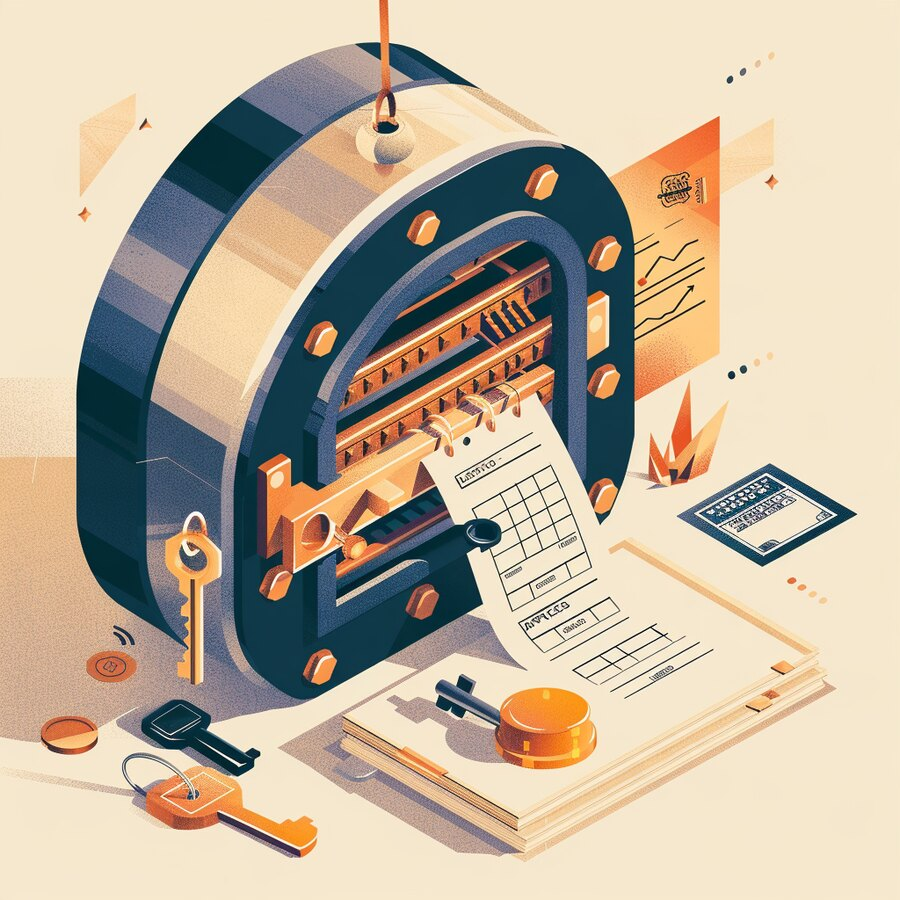
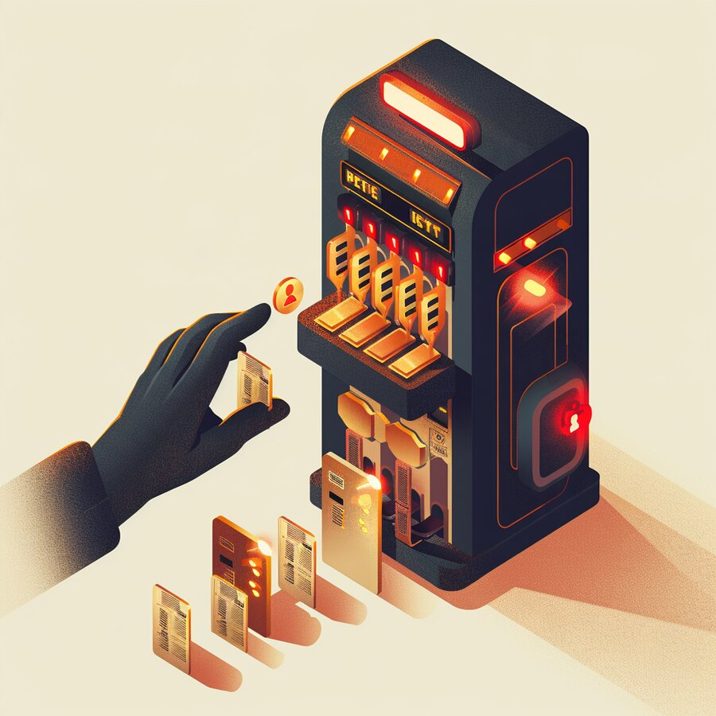
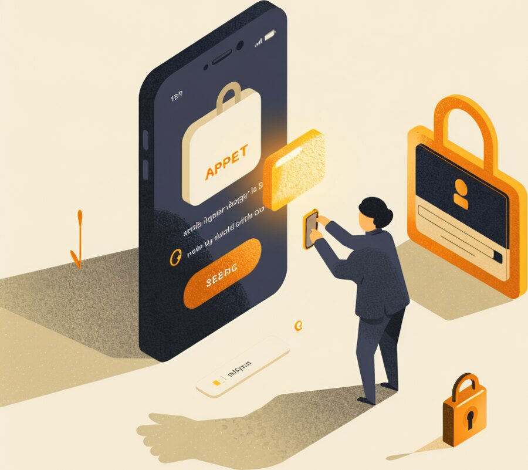

The Signal
| IN THIS ISSUE |
AI & INTELLIGENCE US & China open an AI-incident ‘super intelligence’ channel | DATA Bitget loses $351.6M — the data lied, not the keys | APPLICATIONS SharePoint ‘spoofing’ bug is really remote code execution | CLOUD F5 BIG-IP: the device that authorizes access got an RCE |
CS
Get it in your inbox
Subscribe free — a new edition weekly |
INFRASTRUCTURE Accenture’s $4.1B bet consolidates OT security | NETWORK Citrix NetScaler zero-days exploited worldwide | IDENTITY & ACCESS EvilTokens beat MFA without a single password | CYBERSECURITY North Korea’s fake-job crews drain 7,000 wallets |
Half of your website’s visitors aren’t people anymore.
For thirty years, digital strategy assumed a human on the other end of the screen. That assumption just broke. Fastly, one of the largest content-delivery networks, reports that machine-generated traffic — bots, crawlers and increasingly autonomous AI agents — crossed half of all traffic on its network in July and August 2026, and that AI traffic grew about 6.5 times faster than human traffic earlier in the year. The audience for your website, your APIs and your storefront is now, more often than not, software acting on someone’s behalf.
This reframes several budgets at once. Infrastructure: you are paying to serve a machine audience that does not buy the way humans do, so cost-per-visit and bot management move from an IT footnote to a P&L line. Analytics and marketing: if half your traffic is machines, your conversion rates, attribution and A/B tests are measuring a crowd that is partly synthetic. Product and commerce: when an agent, not a person, compares and buys, the winners are the businesses whose prices, inventory and content are cleanly available through APIs the agent can read — and the losers are the ones optimized only for a human eye.
Our read. Treat machines as a first-class audience. Decide deliberately which bots and agents you welcome, meter or block; separate human and machine traffic in every metric so you steer by real numbers; and make your core offer — catalog, pricing, availability, key content — accessible through a governed API, because that is the channel the fastest-growing segment of your visitors actually uses. The web is being rebuilt for machine readers. Design for them on purpose, or be read badly by accident.
| 1 AI & INTELLIGENCE | POLICY · GOVERNANCE |
The US and China agreed to a direct channel for AI incidents — a signal that even rivals now treat advanced AI as a systemic risk.
On September 25, meeting in Washington, the United States and China agreed to establish an AI Incident Communication Channel and a recurring US–China Super Intelligence Dialogue, with the first session expected by November. The channel is a diplomatic hotline for direct communication when an advanced AI system behaves unexpectedly or an automated signal is misread — an attempt to reduce the risk of miscalculation between the two powers most shaping the technology. Both sides even adopted shared language, referring to frontier AI as “super intelligence.”
Our read. Governments building incident hotlines for AI is a preview of what your own organization needs internally. If a model or agent in your stack does something unexpected, who gets the call, how fast, and what is the playbook? Stand up an AI-incident process now — owners, escalation, kill-switches and logging — and require the same of your AI vendors. The diplomacy is a headline; the operational lesson is that “what do we do when the AI misbehaves” needs an answer before, not during, the incident.
| 2 DATA | INTEGRITY · CUSTODY |
Bitget lost $351.6M not because keys were stolen, but because attackers falsified the data its approval system trusted.
Attackers moved an estimated $351.6 million out of crypto exchange Bitget’s hot and warm wallets across seven blockchains — the largest crypto theft of 2026 so far. The striking detail is the method: Bitget says its private keys were never stolen. Instead, attackers compromised a backend system and manipulated the transaction data shown to the authorization process, so the approvals looked legitimate and the transfers sailed through. The exchange, which ties the pattern to North Korean activity, paused withdrawals and covered the loss from its protection fund.
Our read. This is a data-integrity failure, not a key-theft failure — and it is the more insidious kind. Every automated approval, payment run and reconciliation trusts the data in front of it; if an attacker can quietly edit that data, your controls approve the fraud for them. Protect the integrity and provenance of the records your critical workflows act on: sign and verify transaction data, separate the systems that propose from the systems that approve, and alert on out-of-band changes. Confidentiality gets the headlines; integrity is what moves the money.

| 3 APPLICATIONS | PATCH NOW · RE-RATED |
Microsoft quietly upgraded a SharePoint flaw from medium spoofing to high-severity RCE — and attackers moved in.
Microsoft initially rated CVE-2026-65660 in SharePoint Server a medium-severity “spoofing” issue, then revised it to a high-severity remote code execution flaw that lets a low-privileged, authenticated attacker run code without user interaction. Roughly six weeks after the patch and days after researchers published technical details, exploitation began — including fileless, in-memory webshells, with attackers chaining the authenticated bug to a separate anonymous delivery flaw. CISA added it to the Known Exploited Vulnerabilities catalog on September 25 with a federal deadline of September 28. SharePoint sits on sensitive documents and identities, which makes it a prized foothold.
Our read. Do not triage by the vendor’s first label. Severity ratings get revised, and “spoofing” became “code execution” on the same CVE — so drive your patch priorities from exposure and exploitation signals, not just the initial score. Patch SharePoint on the CISA clock, hunt for in-memory webshells that survive a simple reboot check, and treat any internet-reachable collaboration server as a high-value target that attackers actively watch for public exploit details.
| 4 CLOUD | ACCESS INFRASTRUCTURE · ZERO-DAY |
F5 BIG-IP APM — acting as an OAuth authorization server — was exploited for unauthenticated remote code execution.
F5 disclosed CVE-2026-94127, a critical (CVSS 9.8) heap-overflow in BIG-IP Access Policy Manager under active exploitation. When BIG-IP APM is configured as an OAuth authorization server — the component that issues access tokens to your applications — an unauthenticated attacker can send crafted traffic and achieve remote code execution. CISA added it to the KEV catalog on September 22 with a three-day federal deadline. Compromising the system that hands out access tokens is close to holding the master key to everything behind it.
Our read. Access infrastructure is tier-0. The gateways, identity providers and token-issuing services that sit in front of your applications deserve the same protection and patch urgency as domain controllers, because a foothold there converts into legitimate-looking access everywhere. Patch affected BIG-IP now, take management and OAuth endpoints off untrusted networks, and rotate signing keys and tokens if there is any doubt. The safest assumption after an authorization-server bug is that some access it granted was not yours to trust.

| 5 INFRASTRUCTURE & HYBRID CLOUD | OT SECURITY · M&A |
Accenture is taking a majority stake in Dragos and buying runZero and NetRise — a sign the OT-security market is platformizing.
In a deal valued around $4.1 billion, Accenture is taking a majority stake in industrial-security specialist Dragos and fully acquiring runZero (asset discovery and attack-surface intelligence, founded by Metasploit creator HD Moore) and NetRise (firmware and software-supply-chain analysis), which will operate under Dragos. Together the three are projected at roughly $208 million in ARR. The strategic message: securing operational technology — the systems that run factories, utilities and physical infrastructure — is consolidating from point tools into integrated platforms with big-integrator backing.
Our read. Consolidation cuts both ways for buyers. An integrated OT platform can mean fewer seams and one view of asset, exposure and threat — genuinely valuable when you cannot even list what is on your plant floor. But it also concentrates your dependency on one vendor and one integrator, so negotiate exit rights and data portability up front. If OT is in your estate, use this moment to get the fundamentals first: a complete asset inventory and network segmentation between IT and OT, regardless of whose logo is on the platform.
| 6 NETWORK & CONNECTIVITY | EDGE · ZERO-DAY |
Two NetScaler RCE zero-days hit every default deployment — and were being exploited for weeks before the patch.
Citrix confirmed two critical remote code execution zero-days in NetScaler ADC and Gateway, CVE-2026-88771 and CVE-2026-88772, both rated 9.5 and both exploited in the wild before disclosure. CVE-2026-88771, an input-validation flaw, lets an unauthenticated attacker run commands on every affected deployment, including the default configuration — no special feature required. CISA added both to its KEV catalog on September 27, reporting global exploitation, and defenders were urged to shut down exposed NetScalers where they could not patch immediately. Attackers have been planting webshells for weeks.
Our read. NetScaler is a remote-access front door, so treat this as an emergency, not a maintenance item: patch to fixed builds now, and because exploitation predates disclosure, assume compromise — hunt for webshells and anomalous sessions rather than trusting that patching alone closes the incident. The recurring lesson is unchanged: internet-facing access appliances are prime targets, and every one you can put behind identity-aware access or retire is one fewer pre-patch zero-day to survive.
| 7 IDENTITY & ACCESS | PHISHING · MFA BYPASS |
Microsoft disrupted EvilTokens, a phishing service that hijacked 12,000 inboxes by abusing the device-code login flow.
Microsoft, with law enforcement and partners, disrupted EvilTokens, a phishing-as-a-service platform that compromised more than 12,000 inboxes across over 10,000 organizations since February. Its specialty was device-code phishing: rather than stealing passwords, it abused the legitimate device-code authentication flow to capture access tokens — sailing past MFA, because the victim really did approve a real login prompt. Two suspected administrators were arrested in the UK. Targets spanned wholesale, construction, financial services, real estate, higher education and healthcare.
Our read. MFA is necessary but no longer sufficient. Device-code and token-theft attacks turn a trusting user into the exploit, so add the controls that catch stolen sessions: restrict the device-code flow to where it is genuinely needed, enforce phishing-resistant methods (passkeys, FIDO2) for sensitive access, and use conditional access plus token-protection and anomaly detection to spot a token used from the wrong device or place. Train people that approving an unexpected sign-in prompt is the attack. (Identity is where this quarter’s incidents keep landing.)

| 8 CYBERSECURITY | STATE ACTORS · EXPLOITATION |
North Korea’s ‘Contagious Interview’ crews drained thousands of wallets, as CISA logged more exploited flaws.
A joint FBI/Japanese advisory tied North Korea’s WaterPlum group — better known as Contagious Interview — to the compromise of at least 30,000 devices in more than 100 countries and theft from over 7,000 crypto wallets, sending about $10.71 million to the regime. The lure is a fake job: developers are talked into installing malware disguised as a coding test or interview app. Meanwhile CISA added freshly exploited flaws to its catalog this week, including a WSO2 path-traversal and an Adobe Commerce/Magento authorization bug — a reminder that the exploitation treadmill never pauses.
Our read. Your hiring and developer-onboarding pipeline is now an attack surface. Warn candidates and staff that “run this take-home app” can be the payload, run interview software in isolated or virtual environments, and never let a personal dev machine hold production or wallet credentials. On the exploitation side, keep the discipline that works: patch KEV-listed flaws fast, shrink internet-facing surface, and assume anything with a public exploit is being scanned within hours.
| THE THROUGH-LINE | ACROSS ALL EIGHT LAYERS |
| ABOUT CYBERSAINYA | DIGITAL TRANSFORMATION PARTNER |
CyberSainya is a digital transformation partner. We help organizations turn IT, security, and AI from sources of risk into engines of growth — complexity made simple. That means clear strategy, the right technology, and a partner who stays in the room long after the decision is made: advisory and consulting, security and IT assessments, executive workshops, and hands-on execution. Through our AI products division, CernoGlobus, we build practical, security-by-design AI that puts enterprise-grade protection behind everyday automation.